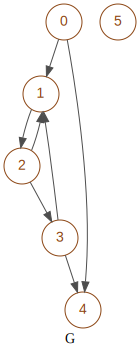

matrixbinaryslides¶
Created on Apr 26, 2021
@author: salem Aguemoun
-
class
graphm.matrixbinaryslides.MatrixBinarySlides(d)¶ Bases:
graphm.matrixbinaryclosure.MatrixBinaryClosureManage binary closure and intermediate matrices
This class give a lot of tools to manipulate and analyse a graph with its transitive closure
Note
Closure can comes from MatrixBinary:
- closure_matrix()
- matrix
MatrixBinary: original matrix
- matrices
MatrixBinary: intermediate matrices
- closure
MatrixBinary closure: transitive closure
- reflexive
bool: if matrix is reflexive
- deep
int deep: deep rank of closure
- closure_slides()
(MatrixBinary, deep, list(matrixM))
- matrix
MatrixBinary: original matrix
- matrices
list: intermediate matrices in matrixM
- closure
MatrixBinary closure: transitive closure
- reflexive
bool: if matrix is reflexive
- deep
int deep: deep rank of closure
Caution
Instance variables
- Variables
closureM (list) – integers rows of transitive closure
closureMS (list) – strings rows of transitive closure
closureN (list) – integers columns of transitive closure
closureNS (list) – strings columns of transitive closure
deep (int) – max deep for transitive closure
dim (int) – dimension of square matrix
matrix (MatrixBinary) – original matrix come from closure
reflexive (bool) – if True closure is reflexive
slidesM (list) – integers rows of adjacency matrices
slidesMS (list) – strings rows of adjacency matrices
slidesN (list) – integers columns of adjacency matrices
slidesNS (list) – strings columns of adjacency matrices
unit (list) – diagonal matrix with integers
Graph for the majority of examples
-
__init__(d) → graphm.matrixbinaryslides.MatrixBinarySlides¶ Set closure, intermediate matrices and properties
- Parameters
d (dict) –
options to specify the type of matrix
with following indexes:
- matrix
MatrixBinary: original matrix
- closure
MatrixBinary: transitive closure
- reflexive
bool: if matrix is reflexive
optional indexes:
- matrices
list: intermediate matrices (MatrixBinary or matrix)
- deep
int deep: deep rank of closure
- operations
int: number of operations
-
get_deep_node_reached(node_start: int, node_end: int) → int¶ Return the deep of shortest path between the given starting & ending nodes
- Parameters
node_start (int) – starting node
node_end (int) – ending node
- Returns
the deep of shortest path or -1 if the path does not exists
- Return type
set
Warning
deep start from 0. 0 means the distance between nodes is 1
>>> m = MatrixBinary(boolean=['01001', '00100', '01010', '00001', '01010']) >>> mbs = MatrixBinarySlides(m.closure_slides())
>>> mbs.get_deep_node_reached(0,4) 0 >>> mbs.get_deep_node_reached(4,0) -1
-
static
get_slide_MS2NS(slide: list) → list¶ Return the transpose of the slide. swapped slidesM and slidesN
Convert rows of this matrix to columns
- Returns
the transpose of the slide
- Return type
list
>>> m = MatrixBinary(boolean=['00001', '00100', '00010', '00000', '01001']) >>> mbs = MatrixBinarySlides(m.closure_slides()) >>> closure = mbs.get_closure(style='str')
>>> print(closure) ['01111', '00110', '00010', '00000', '01111']
>>> print(mbs.get_slide_MS2NS(closure)) ['00000', '10001', '11001', '11101', '10001']
-
set_closure_binary(matrix: graphm.matrixbinary.MatrixBinary, closure: object, matrices: list, reflexive, deep: int = - 1, **d) → None¶ Set properties of this object from closure binary
- Parameters
closure (object) – transitive closure MatrixBinary class or matrixM list
>>> m = MatrixBinary(boolean=['00001', '00100', '00010', '00000', '01001'])
>>> mbs = MatrixBinarySlides(m.closure_matrix()) >>> print(mbs) dim=5 reflexive=False deep=4 01111 00110 00010 00000 01111
>>> mbs = MatrixBinarySlides(m.closure_slides()) >>> print(mbs) dim=5 reflexive=False deep=4 01111 00110 00010 00000 01111
>>> mbs = MatrixBinarySlides(m.closure_slides(add=True)) >>> print(mbs) dim=5 reflexive=True deep=4 11111 01110 00110 00010 01111
-
slides_MS2NS() → None¶ Transpose matrices of all slides Converts slidesM & slidesMS and set slidesN and slidesNS
>>> m = MatrixBinary(boolean=['00001', '00100', '00010', '00000', '01001']) >>> mbs = MatrixBinarySlides(m.closure_slides())
>>> print(mbs.slidesM[0]) [1, 4, 2, 0, 9] >>> print(mbs.slidesMS[0]) ['00001', '00100', '00010', '00000', '01001']
>>> mbs.slides_MS2NS()
>>> print(mbs.slidesN[0]) [0, 1, 8, 4, 17] >>> print(mbs.slidesNS[0]) ['00000', '00001', '01000', '00100', '10001']
-
__module__= 'graphm.matrixbinaryslides'¶